3.8 球面几何（Spherical Geometry）
单位球面上的几何在渲染中也常常非常有用。三维单位方向向量可以等效地表示为单位球面上的点，而方向集可以表示为单位球面上的区域。诸如限定一组方向之类的有用操作通常可以简洁地表示为单位球面上的边界。因此，我们将在本节中介绍一些有用的球面几何原理以及相关的类和函数。
3.8.1 立体角（Solid Angles）
在二维中，平面角（planar angle） 是某个物体相对于某个位置所张的总角（图 3.12）。考虑围绕点 \( \text{p} \) 的单位圆；如果我们将要着色的物体投影到该圆上，圆的某段长度 \( s \) 将被其投影覆盖。 \( s \) 的弧长（与角 \( \theta \) 相同）是物体所张的角度。平面角用 弧度（radians ） 来度量，整个单位圆覆盖 \( 2\pi \) 弧度。
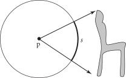图 3.12：平面角。 从点 \( p \) 观察，一个物体的平面角等于从 \( p \) 观察它时所张的角，或者等价地，等于单位球面上弧 \( s \) 的长度。
立体角将二维的单位圆扩展为三维的单位球（图 3.13）。总面积 \( s \) 是物体所张的立体角。立体角用 球面度（steradians）（sr）来度量。整个球面所张的立体角为 \( 4\pi sr \) ，而半球所张的立体角为 \( 2\pi sr \) 。
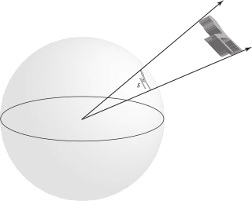图 3.13：立体角。 由三维物体所张的立体角 \( s \) 是通过将物体投影到单位球面上并测量其投影面积来计算的。
通过提供一种在单位球面上测量面积的方法（从而也在单位方向上测量），立体角也为积分球面函数的测度提供了基础；微分立体角（differential solid angle） \( \text{d}\omega \) 对应于单位球面上的微分面积测度。
3.8.2 球面多边形（Spherical Polygons）
我们有时会发现，考虑从一个点到多边形表面的方向集合是有用的。（例如，当计算来自发光多边形到达某点处的照明时，这样做可能很有用。）如果将一个规则平面多边形投影到单位球上，它会形成一个 球面多边形（spherical polygon）。
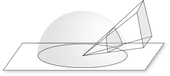图 3.14： 球面多边形对应于多边形在单位球面上的投影。它的顶点对应于指向原始多边形顶点的单位向量，而其边则由球面与经过球心和多边形两个顶点的平面的交线所定义。
球面多边形的顶点可以通过归一化从球心指向原始多边形相应顶点的向量来找到。球面多边形的每一条边由单位球与经过球心和多边形对应两个顶点的平面的交线所定义。结果是在球面上形成一条 大圆（great circle），它是在球面上连接这两个顶点的最短路径（图 3.14）。
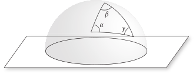图 3.15：一个球面三角形（Spherical Triangle）。 每个顶点的角用与其顶点对应的希腊字母标记。
每个顶点处的角由与该顶点相交的两条边对应的平面之间的夹角给出（图 3.15）。 （两个平面之间的夹角称为 二面角（dihedral angle）。）我们将用与顶点标签对应的希腊字母标记每个顶点的角（ \( \alpha \) 表示顶点 \( \mathbf{a} \) 的角，依此类推）。与平面三角形不同，球面三角形的三个角之和不等于 \( \pi \) 弧度；相反，它们的和为 \( \pi + A \) ，其中 \( A \) 是球面三角形的面积。给定角 \( \alpha \) 、 \( \beta \) 和 \( \gamma \) ，可以使用 吉拉尔定理（Girard’s theorem） 计算出球面三角形的面积，该定理指出，单位球面上三角形的表面积 \( A \) 由“超角（excess angle）”给出
\[
A = \alpha + \beta + \gamma - \pi
\]
直接实现方程（3.5）需要多次调用昂贵的反三角函数，并且由于浮点数消除（floating-point cancellation），其计算可能容易出现错误。一种更高效且准确的方法是应用关系式
\[ \tan\left(\frac{1}{2}A\right)=\frac{\mathbf{a}\cdot(\mathbf{b}\times\mathbf{c})}{1+(\mathbf{a}\cdot\mathbf{b})+(\mathbf{a}\cdot\mathbf{c})+(\mathbf{b}\cdot\mathbf{c})} \]
它可以使用球面三角恒等式从方程（3.5）推导出。该方法在 SphericalTriangleArea() 中使用，需要传入单位球面上与球面三角形的顶点对应的三个向量。
/** 球面几何内联函数 */
Float SphericalTriangleArea(Vector3f a, Vector3f b, Vector3f c) {
return std::abs(2 * std::atan2(Dot(a, Cross(b, c)),
1 + Dot(a, b) + Dot(a, c) + Dot(b, c)));
}
四边形（quadrilateral）投影到单位球上的面积由 \( \alpha + \beta + \gamma + \delta - 2\pi \) 给出，其中 \( \alpha \) 、 \( \beta \) 、 \( \gamma \) 和 \( \delta \) 是其内角（interior angles）。该值通过 SphericalQuadArea() 计算，该方法需传入单位球上的顶点位置。其实现与 SphericalTriangleArea() 非常相似，因此在此不再包含。
/** 球面几何内联函数 */
Float SphericalQuadArea(Vector3f a, Vector3f b, Vector3f c, Vector3f d);
3.8.3 球面参数化（Spherical Parameterizations）
单位球面上用一个点的三维笛卡尔坐标来表示方向并不总是最方便的。例如，如果我们要在单位球上把一个函数制成表格，那么采用利用球面是二维这一事实的二维参数化会更为理想。
在二维平面与球体之间存在多种映射。自制图术（map making）诞生以来，开发满足各种目标的此类映射一直是制图的重要部分。可以证明，任何从平面到球面的映射都会引入某种形式的失真；因此，我们的任务就是选择最能满足特定应用需求的映射方式。pbrt 因此使用了三种不同的球面参数化，每种都有不同的优缺点。
球面坐标（Spherical Coordinates）
球面坐标 \( (\theta,\phi) \) 是球体中众所周知的参数化方式。对于半径为 \( r \) 的一般球体，它们与笛卡尔坐标系的关系为
\[ \begin{align} x &= r\sin\theta\cos\phi \\ y &= r\sin\theta\sin\phi \\ z &= r\cos\theta \\ \end{align} \]
（见图 3.16。）
图 3.16： 如果给定 \( x \) 、 \( y \) 和 \( z \) 基向量，方向向量可以用球面坐标 \( (\theta,\phi) \) 表示，。球面角公式使得在这两种表示之间转换变得简单。
为了方便，我们将定义一个 SphericalDirection() 函数，该函数直接应用上述方程将一对 \( \theta \) 和 \( \phi \) 转换为单位 \( (x,y,z) \) 向量，。请注意，该函数接收的是 \( \theta \) 的正弦和余弦，而不是 \( \theta \) 本身。这是因为 \( \theta \) 的正弦和余弦通常已经对调用者可用。然而，\( \phi \) 通常不是这种情况，因此 \( \phi \) 按原样传入。
/** 球面几何内联函数 */
Vector3f SphericalDirection(Float sinTheta, Float cosTheta, Float phi) {
return Vector3f(Clamp(sinTheta, -1, 1) * std::cos(phi),
Clamp(sinTheta, -1, 1) * std::sin(phi),
Clamp(cosTheta, -1, 1));
}
将方向 \( (x,y,z) \) 转换为球面坐标可以通过以下方式进行
\[
\begin{align}
\theta &= \arccos z \\
\phi &= \arctan \frac{y}{x} \\
\end{align}
\]
相应的函数如下。请注意， SphericalTheta() 假设在传入之前向量 v 已经被归一化；使用 SafeACos() 代替 std::acos() 可以避免由于浮点数舍入误差导致的 \( |\text{v}.\mathbf{z}| \) 略大于 1 而出现的错误。
/** 球面几何内联函数 */
Float SphericalTheta(Vector3f v) { return SafeACos(v.z); }
SphericalPhi() 返回一个在 \( [0,2\pi] \) 范围中的角，这有时需要对 std::atan2() 返回的值进行调整。
/** 球面几何内联函数 */
Float SphericalPhi(Vector3f v) {
Float p = std::atan2(v.y, v.x);
return (p < 0) ? (p + 2 * Pi) : p;
}
给定一个方向向量 \( \omega \) ，计算类似角 \( \theta \) 的余弦这样的量是很简单的：
\[ \cos\theta = ((0,0,1)\cdot\omega) = \omega_z \]
这比使用一个昂贵的反三角函数先计算 \( \omega \) 对应的 \( \theta \) ，然后再使用另一个昂贵的函数计算它的余弦值要高效得多。下面是计算这个余弦的函数及一些有用的变体。
/** 球面几何内联函数 */
Float CosTheta(Vector3f w) { return w.z; }
Float Cos2Theta(Vector3f w) { return Sqr(w.z); }
Float AbsCosTheta(Vector3f w) { return std::abs(w.z); }
\( \sin^2\theta \) 的值可以通过三角恒等式 \( \sin^2\theta + \cos^2\theta = 1 \) 高效计算得出，然而我们需要小心避免在 1 - Cos2Theta(w) 因浮点舍入误差而小于零的少见情况下返回负值。
/** 球面几何内联函数 */
Float Sin2Theta(Vector3f w) { return std::max<Float>(0, 1 - Cos2Theta(w)); }
Float SinTheta(Vector3f w) { return std::sqrt(Sin2Theta(w)); }
角 \( \theta \) 的正切可以通过恒等式 \( \tan\theta = \sin\theta/\cos\theta \) 计算得出。
/** 球面几何内联函数 */
Float TanTheta(Vector3f w) { return SinTheta(w) / CosTheta(w); }
Float Tan2Theta(Vector3f w) { return Sin2Theta(w) / Cos2Theta(w); }
角 \( \phi \) 的正弦和余弦也可以通过 \( (x,y,z) \) 坐标轻松找到，而无需使用反三角函数（图 3.17）。在 \( z=0 \) 平面中，向量 \( \omega \) 的坐标为 \( (x,y) \) ，分别由 \( r\cos\phi \) 和 \( r\sin\phi \) 给出。半径 \( r \) 为 \( \sin\theta \) ，因此
\[
\begin{align}
\cos\phi &= \frac{x}{r} = \frac{x}{\sin\theta} \\
\sin\phi &= \frac{y}{r} = \frac{y}{\sin\theta} \\
\end{align}
\]
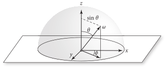图 3.17： \( \sin\phi \) 和 \( \cos\phi \) 的值可以使用圆坐标方程 \( x=r\cos\phi \) 和 \( y=r\sin\phi \) 计算，其中虚线的长度 \( r \)，等于 \( \sin\theta \) 。
/** 球面几何内联函数 */
Float CosPhi(Vector3f w) {
Float sinTheta = SinTheta(w);
return (sinTheta == 0) ? 1 : Clamp(w.x / sinTheta, -1, 1);
}
Float SinPhi(Vector3f w) {
Float sinTheta = SinTheta(w);
return (sinTheta == 0) ? 0 : Clamp(w.y / sinTheta, -1, 1);
}
最后，两个向量的 \( \phi \) 值之间的角度 \( \Delta\phi \) 的余弦可以通过将它们的 \( z \) 坐标归零以获得在 \( z=0 \) 平面中的二维向量，然后对它们进行归一化来找到。这两个向量的点积给出了它们之间夹角的余弦。下面的实现稍微调整了项的顺序以提高效率，从而只需执行一次平方根操作。
/** 球面几何内联函数 */
Float CosDPhi(Vector3f wa, Vector3f wb) {
Float waxy = Sqr(wa.x) + Sqr(wa.y), wbxy = Sqr(wb.x) + Sqr(wb.y);
if (waxy == 0 || wbxy == 0) return 1;
return Clamp((wa.x * wb.x + wa.y * wb.y) / std::sqrt(waxy * wbxy),
-1, 1);
}
用球面坐标对球面进行参数化对应于球面的 等矩形（equirectangular） 映射。由于在球面两极存在显著的失真，它并不是一种用于表示球面上规则采样数据的特别好的参数化方法。
八面体编码（Octahedral Encoding）
虽然 Vector3f 用来表示单位向量进行的计算时很方便，但它并没有高效利用存储：不仅使用了 12 字节的内存（假设 Float 为 4 字节），而且能够表示任意长度的三维方向向量。然而，归一化向量只是所有可能的 Vector3f 的一个小子集，这意味着这 12 字节所代表的存储并没有很好地分配给它们。当需要在内存中存储许多归一化向量时，更节省空间的表示方式可能是值得的。
球面坐标可以用于此任务。这样做可以把所需的存储减少到两个 Float ，但缺点是需要相对昂贵的三角函数和反三角函数来进行 Vector3 之间的转换。此外，球面坐标在两极附近精度更高，而在赤道附近则精度较低；在所有单位向量之间更均匀的精度分布是更理想的。（由于浮点数的表示方式， Vector3f 在单位球面的不同部分也存在精度不同的问题。）
OctahedralVector 提供了一种紧凑的单位向量表示，具有均匀的精度分布和高效的编码与解码例程。我们的实现仅为每个单位向量使用 4 字节的内存；这 4 字节的所有可能值对应于一个有效的单位向量。它的表示不适合计算，但其与 Vector3f 之间转换非常简单，这使得它成为在内存中存储归一化向量的理想选择。
/** OctahedralVector 定义 */
class OctahedralVector {
public:
/** OctahedralVector 公有方法 */
private:
/** OctahedralVector 私有方法 */
/** OctahedralVector 私有成员 */
};
正如其名，该单位向量基于单位球的八面体映射，如图 3.18 所示。
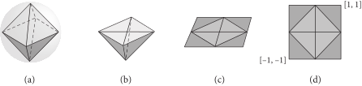图 3.18： 使用 OctahedralVector 对单位球的参数化可以这样理解，首先，想象 (a) 一个内切于球体的八面体。它的二维参数化随后通过 (b) 将顶部的金字塔展平到 \( z=0 \) 平面以及 (c) 展开下半部分并将其三角形投影到同一平面来定义。 (d) 得到的结果允许一个简单的 \( [-1,1]^2 \) 参数化。 (图 2 之后的图源自 Meyer 等人（2010）。)
将单位向量转换为这种表示的算法出奇地简单。第一步是将向量投影到三维八面体的面上；这步可以通过将向量分量除以向量的 L1 范数 \( |\mathbf{v}_x|+|\mathbf{v}_y|+|\mathbf{v}_z| \) 来完成。对于位于上半球的点（即，具有 \( \mathbf{v}_z \geq 0 \) ），投影到 \( z=0 \) 平面只需直接取 \( x \) 和 \( y \) 分量。
/** OctahedralVector 公有方法 */
OctahedralVector(Vector3f v) {
v /= std::abs(v.x) + std::abs(v.y) + std::abs(v.z);
if (v.z >= 0) {
x = Encode(v.x);
y = Encode(v.y);
} else {
/** 编码 z < 0 的八面体向量 */
}
}
对于下半球的方向，投影到 \( [-1,1]^2 \) 中适当的点会稍微复杂一些，然而只需稍加注意即可在没有任何条件控制流的情况下表达出来。（以下是另一种值得理解的简洁代码片段；相比于基于 if 语句处理四个三角形独立展开的代码。）
/** 编码 z < 0 的八面体向量 */
x = Encode((1 - std::abs(v.y)) * Sign(v.x));
y = Encode((1 - std::abs(v.x)) * Sign(v.y));
辅助函数 OctahedralVector::Sign() 使用标准数学库函数 std::copysign() 根据 v 的符号（正/负零被视为普通数字）返回 \( \pm1 \)。
/** OctahedralVector 私有方法 */
static Float Sign(Float v) { return std::copysign(1.f, v); }
图 3.18(d)中的二维参数化随后使用一个 16 位的值来表示每个坐标，该值将范围 \( [-1,1] \) 量化为 \( 2^16 \) 步。
/** OctahedralVector 私有成员 */
uint16_t x, y;
Encode() 将 \( [-1,1] \) 中的值编码为整数编码。
/** OctahedralVector 私有方法 */
static uint16_t Encode(Float f) {
return pstd::round(Clamp((f + 1) / 2, 0, 1) * 65535.f);
}
反向执行相同的操作就可以映射回 Vector3f 。对于上半球的方向，八面体面上的 \( z \) 值很容易找到。对该向量进行归一化后，便得到了相应的单位向量。
/** OctahedralVector 公有方法 */
explicit operator Vector3f() const {
Vector3f v;
v.x = -1 + 2 * (x / 65535.f);
v.y = -1 + 2 * (y / 65535.f);
v.z = 1 - (std::abs(v.x) + std::abs(v.y));
/** 对八面体 z < 0 的部分重新参数化方向 */
return Normalize(v);
}
对于下半球的方向，在方向归一化之前，必须反向执行在 <<编码 z < 0 的八面体向量>> 片段中实现的映射。
/** 对八面体 z < 0 的部分重新参数化方向（Reparameterize directions in the z < 0 portion of the octahedron） */
if (v.z < 0) {
Float xo = v.x;
v.x = (1 - std::abs(v.y)) * Sign(xo);
v.y = (1 - std::abs(xo)) * Sign(v.y);
}
等面积映射（Equal-Area Mapping）
在 pbrt 中使用的第三种球面参数化方法经过精心设计以保持面积：球面上的任何区域都被映射到参数域中与之成比例的区域。这种表示方式对于球面上的制表函数（tabulating functions）是一个很好的选择，因为它是连续的，具有相对较低的失真，并且所有存储的值表示相同的立体角。它结合了在 OctahedralVector 类中使用的八面体映射和 A.5.1 节中从正方形到圆盘映射的变体，该变体以保持面积的方式将单位正方形映射到半球。该映射将单位正方形分成四个区域（sector），每个区域映射到半球的一个区域（见图 3.19）。
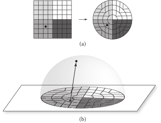图 3.19： 均匀半球映射 (a) 首先将单位正方形转换为单位圆盘，使得正方形的四个着色区域映射到圆盘的相应着色区域。 (b) 然后，圆盘上的点以保持相对面积的方式映射到半球上。
给定 \( (u,v) \in [-1,1]^2 \) ；那么在 \( u \geq 0 \) 和 \( u - |v| \geq 0 \) 的第一个区域，单位圆盘上点的极坐标为
\[ \begin{align} r &= u \\ \phi &= \frac{\pi}{4}\frac{v}{u} \end{align} \]
在 \( \phi \in [-\pi/4,\pi/4] \) 上给出了一个保面积映射（area-preserving mapping）。其他三个区域也可以找到类似的映射。
给定 \( (r, \phi) \) ，则正半球上的对应点为
\[
\begin{align}
x &= (\cos\phi)r\sqrt{2-r^2} \\
y &= (\sin\phi)r\sqrt{2-r^2} \\
z &= 1-r^2 \\
\end{align}
\]
该映射也是保持面积的。
这种映射可以使用与 OctahedralVector 相同的八面体映射扩展到整个球体。然后有三个步骤：
- 首先，将八面体映射应用于方向，得到一个点 \( (u,v) \in [-1,1]^2 \) 。
- 对于上半球的方向，采用同心半球映射（concentric hemisphere mapping），即方程（3.9），应用于八面体映射的内正方形。这需要考虑到它相对于半球映射所期望的正方形旋转了 \( 45^\circ \) 。
- 下半球的方向在应用半球映射之前，会沿着其象限的对角线（quadrant’s diagonal）进行镜像。然后，得到的方向向量的 \( z \) 分量被取反。
以下该方法的实现经过一些处理以确保 无分支（branch free）：无论输入值是什么，函数的控制流只有一条路径。当可能时，这一特性通常对性能有帮助，特别是在 GPU 上，然而我们注意到该函数通常只占 pbrt 执行时间的一小部分，因此这一特性并不会影响系统的整体性能。
/** 正方形-球体映射函数定义（Square–Sphere Mapping Function Definitions） */
Vector3f EqualAreaSquareToSphere(Point2f p) {
/** 将 p 转换到 [-1,1]^2 并计算绝对值 */
/** 以对角线的有符号距离计算半径 r */
/** 计算用于正方体到球体映射的角 Φ */
/** 求球面方向的 z 坐标 */
/** 计算原象限的 cos ϕ 和 sin ϕ 并返回向量 */
}
在将原始点 p 从 \( [0,1]^2 \) 转换到 \( (u,v) \in [-1,1]^2 \) 后，实现还计算了这些坐标的绝对值 \( u'=|u| \) 和 \( v'=|v| \) 。这样做将具有一个或两个负坐标值的三个象限重新映射到正象限，翻转每个象限，使其上半球映射到 \( u' + v' < 1 \) ，这对应于原始正象限中的上半球。（每个下半球映射到 \( u' + v' > 1 \) 区域，对应于原始负象限。）
/** 将 p 转换到 [-1,1]^2 并计算绝对值 */
Float u = 2 * p.x - 1, v = 2 * p.y - 1;
Float up = std::abs(u), vp = std::abs(v);
该函数的大部分实现操作都使用正象限中的 \( (u',v') \) 。其下一步是通过计算到对角线 \( u+v=1 \) 的有符号距离来计算映射到圆盘的半径 \( r \) ，该对角线将上半球和下半球分开，其中下半球的有符号距离为负（图 3.20）。
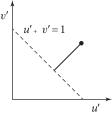图 3.20：正方形到圆盘映射的半径 \( r \) 计算。 计算到直线 \( u' + v' = 1 \) 的有符号距离。1 减去它的绝对值得到介于 0 到 1 之间的半径。
/** 以对角线的有符号距离计算半径 r */
Float signedDistance = 1 - (up + vp);
Float d = std::abs(signedDistance);
Float r = 1 - d;
\( \phi \) 的计算通过增加一个 \( \pi/4 \) 项来进行 \( 45^\circ \) 的旋转。
/** 计算用于正方体到球体映射的角 Φ */
Float phi = (r == 0 ? 1 : (vp - up) / r + 1) * Pi / 4;
先前计算的有符号距离的符号表明了点 \( (u',v') \) 是否位于下半球；返回的 \( z \) 坐标使用其符号。
/** 求球面方向的 z 坐标 */
Float z = pstd::copysign(1 - Sqr(r), signedDistance);
在正象限计算 \( \cos\phi \) 和 \( \sin\phi \) 之后，有必要将这些值重新映射到原始点 \( (u,v) \) 所在的实际象限中的正确值。将 \( u \) 的符号与计算得到的 \( \cos\phi \) 值关联，并将 \( v \) 的符号与 \( \sin\phi \) 关联，便足以做到这一点，此操作可以通过再次使用 copysign() 来实现。
/** 计算原象限的 cos ϕ 和 sin ϕ 并返回向量 */
Float cosPhi = pstd::copysign(std::cos(phi), u);
Float sinPhi = pstd::copysign(std::sin(phi), v);
return Vector3f(cosPhi * r * SafeSqrt(2 - Sqr(r)),
sinPhi * r * SafeSqrt(2 - Sqr(r)), z);
逆映射由 EqualAreaSphereToSquare() 函数执行，该函数以相反的方式有效地执行相同的操作，因此没有包含在此。同样有用且没有包括在此的还有 WrapEqualAreaSquare() 函数，它处理位于 \( [0,1]^2 \) 之外的点 p 的边界情况（在进行图像纹理查找的双线性插值时可能会发生），并将它们映射到可以传给 EqualAreaSquareToSphere() 的适当的有效坐标。
3.8.4 边界方向（Bounding Directions）
除了对空间区域进行边界限定外，有时对一组方向进行边界限定也很有用。例如，如果光源在某些方向上发出光照而在其他方向上不发出，这些信息可以用来排除该光源在其显然不会照亮的点的光照计算中。 pbrt 提供了 DirectionCone 类用于此类用途；它表示一个由中心方向（central direction）和角度扩展（angular spread）参数化的圆锥（见图 3.21）。
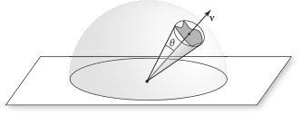图 3.21：用圆锥界定方向集。 方向集在这里以球面上的阴影区域表示，可以使用一个由中心方向向量 \( \mathbf{v} \) 和扩展角 \( \theta \) 描述的圆锥来界定，使得集合中的所有方向都位于圆锥内部。
/** DirectionCone 定义 */
class DirectionCone {
public:
/** DirectionCone 公有方法 */
/** DirectionCone 公有成员 */
};
DirectionCone 提供了多种构造函数，包括一个接受圆锥的中心轴和其扩展角的余弦值的构造函数，以及一个限制单一方向的构造函数。对于构造函数参数和存储在类中的圆锥表示，使用的是扩展角的余弦值，而不是角度本身。这样做使得可以使用高效的点积来替代更昂贵的三角函数，从而使 DirectionCone 执行一些以下操作。
/** DirectionCone 公有方法 */
DirectionCone() = default;
DirectionCone(Vector3f w, Float cosTheta)
: w(Normalize(w)), cosTheta(cosTheta) {}
explicit DirectionCone(Vector3f w) : DirectionCone(w, 1) {}
DirectionCone 的默认构造函数是空的；将 cosTheta 设置成无效的无穷大值来编码该情况。
/** DirectionCone 公共成员 */
Vector3f w;
Float cosTheta = Infinity;
一个报告圆锥是否为空的便捷方法。
/** DirectionCone 公有方法 */
bool IsEmpty() const { return cosTheta == Infinity; }
另一个便捷方法提供了对所有方向的界限。
/** DirectionCone 公有方法 */
static DirectionCone EntireSphere() {
return DirectionCone(Vector3f(0, 0, 1), -1);
}
给定一个 DirectionCone ，很容易检查给定的方向向量是否在其范围内：方向与圆锥中心方向之间的夹角的余弦必须大于圆锥扩展角的余弦。（注意，角度越小，余弦越大。）
/** DirectionCone 内联函数 */
bool Inside(const DirectionCone &d, Vector3f w) {
return !d.IsEmpty() && Dot(d.w, Normalize(w)) >= d.cosTheta;
}
BoundSubtendedDirections() 返回一个约束了给定边界框和相对点 p 所夹方向的 DirectionCone。
/** DirectionCone 内联函数 */
DirectionCone BoundSubtendedDirections(const Bounds3f &b, Point3f p) {
/** 计算 b 的包围球并检查 p 是否在内部 */
/** 计算并返回包围球的 DirectionCone */
}
首先，求出边界 b 的包围球（bounding sphere）。如果给定点 p 在球内，则返回所有方向的方向边界。请注意，点 p 可能在球内但在 b 外，在这种情况下，返回的边界将过于保守（overly conservative）。这个问题在本章末尾的练习中有进一步讨论。
/** 计算 b 的包围球并检查 p 是否在内部 */
Float radius;
Point3f pCenter;
b.BoundingSphere(&pCenter, &radius);
if (DistanceSquared(p, pCenter) < Sqr(radius))
return DirectionCone::EntireSphere();
否则，边界的中心轴由从 p 到球心的向量给出，扩展角的余弦可以通过基本三角函数轻松求出（见图 3.22）。
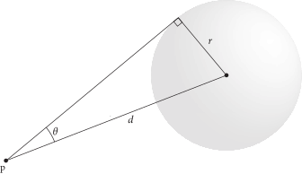图 3.22：由点 \( \text{p} \) 求出包围球所形成的角度。 给定一个包围球和一个位于球外的参考点 \( \text{p} \) ，首先通过将球的半径 \( r \) 除以点 \( \text{p} \) 与球心之间距离 \( d \) 计算出 \( \sin\theta \)，然后使用三角恒等式 \( \sin^2\theta + \cos^2\theta = 1 \) 算出角 \( \theta \) 的余弦。
/** 计算并返回包围球的 DirectionCone */
Vector3f w = Normalize(pCenter - p);
Float sin2ThetaMax = Sqr(radius) / DistanceSquared(pCenter, p);
Float cosThetaMax = SafeSqrt(1 - sin2ThetaMax);
return DirectionCone(w, cosThetaMax);
最后，我们会发现能够取两个 DirectionCone 的并集是有用的，求出一个同时包含他们两个的 DirectionCone 。
/** DirectionCone 函数定义 */
DirectionCone Union(const DirectionCone &a, const DirectionCone &b) {
/** 处理一个或两个圆锥为空的情况 */
/** 处理一个圆锥在另一个圆锥内部的情况 */
/** 计算合并后圆锥的扩展角 theta_o */
/** 求出合并后圆锥的轴并返回圆锥集合 */
}
如果其中一个圆锥是空的，我们可以立即返回另一个圆锥。
/** 处理一个或两个圆锥为空的情况 */
if (a.IsEmpty()) return b;
if (b.IsEmpty()) return a;
否则，实现计算了一些有用的角度，包括每个锥体的实际扩展角以及它们两个中心方向向量之间的夹角。这些值提供了足够的信息来确定一个圆锥是否完全被另一个圆锥包围（见图 3.23）。
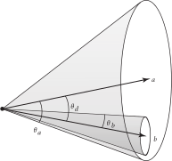图 3.23：确定一个方向锥是否完全在另一个方向锥内部。 给定两个方向锥 \( a \) 和 \( b \) ，它们的扩展角 \( \theta_a \) 和 \( \theta_b \) ，以及它们两个中心方向向量之间的夹角 \( \theta_d \) ，我们可以确定一个锥体是否完全在另一个锥体内部。如图，因为 \( \theta_a > \theta_d + \theta_b \) ，所以 \( b \) 在 \( a \) 内部。
/** 处理一个圆锥在另一个圆锥内部的情况 */
Float theta_a = SafeACos(a.cosTheta), theta_b = SafeACos(b.cosTheta);
Float theta_d = AngleBetween(a.w, b.w);
if (std::min(theta_d + theta_b, Pi) <= theta_a)
return a;
if (std::min(theta_d + theta_a, Pi) <= theta_b)
return b;
否则，需要计算一个新的圆锥来包围它们两个。如图 3.24 所示， \( \theta_a \) 、 \( \theta_d \) 和 \( \theta_b \) 的总和给出了新圆锥必须覆盖的完整角度；其一半是其扩展角度。
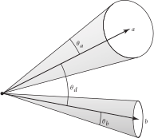图 3.24：计算包围两个其他圆锥的方向圆锥的扩展角。 如果 \( \theta_d \) 是两个圆锥中心轴之间的夹角，而两个圆锥的扩展角分别为 \( \theta_a \) 和 \( \theta_b \) ，那么该圆锥包围的总角度为 \( \theta_a + \theta_d + \theta_b \) ，因此其扩展角为该角度的一半。
/** 计算合并后圆锥的扩展角 theta_o */
Float theta_o = (theta_a + theta_d + theta_b) / 2;
if (theta_o >= Pi)
return DirectionCone::EntireSphere();
新圆锥的方向向量 不 应通过两个圆锥的方向向量的平均值来设定；该向量和一个扩展角 \( \theta_o \) 不一定能够包围这两个给定的圆锥。使用该向量将需要一个大小为 \( \theta_d/2 + \max(2\theta_a, 2\theta_b) \) 的扩展角，而这个角从来不会小于 \( \theta_o \) 。（在纸上画出几个案例以说服自己这一点是值得的。）
相反，我们通过叉积找到与圆锥方向向量垂直的向量，并围绕该轴旋转 a.w，使其能够包围两个圆锥的角。（用于此的 Rotate() 函数将在第 3.9.7 节中介绍。）在 LengthSquared(wr) == 0 的情况下，两向量朝相反方向，此时返回整个球体的边界。†（在这种情况下，其实可以找到更紧的包围，但由于这种情况非常罕见，我们不花时间去更有效地处理它也没关系。）
/** 求出合并后圆锥的轴并返回圆锥集合 */
Float theta_r = theta_o - theta_a;
Vector3f wr = Cross(a.w, b.w);
if (LengthSquared(wr) == 0)
return DirectionCone::EntireSphere();
Vector3f w = Rotate(Degrees(theta_r), wr)(a.w);
return DirectionCone(w, std::cos(theta_o));